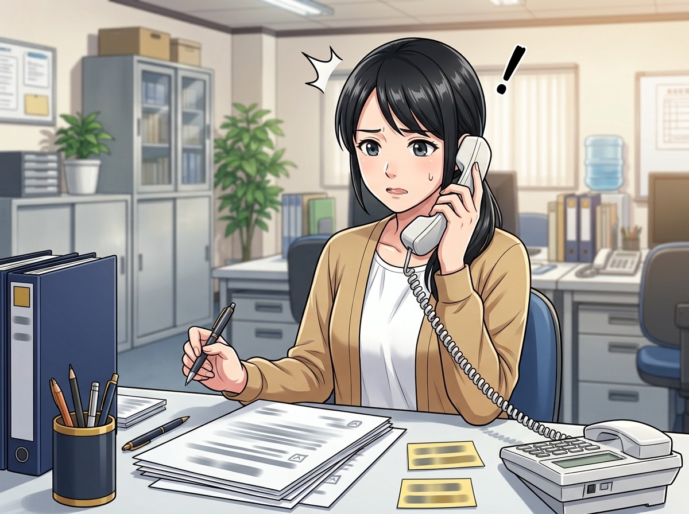
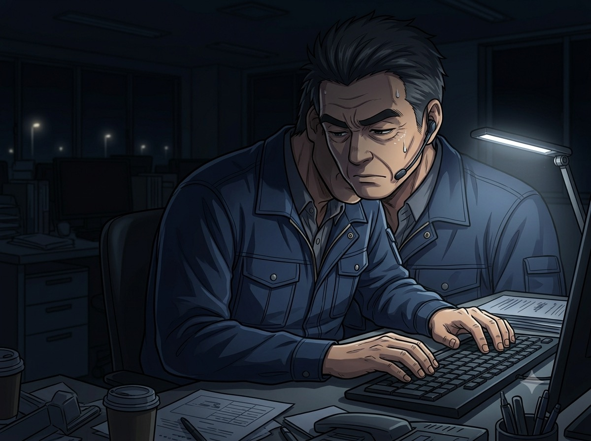
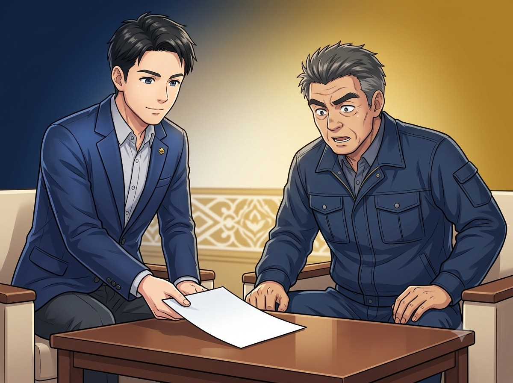
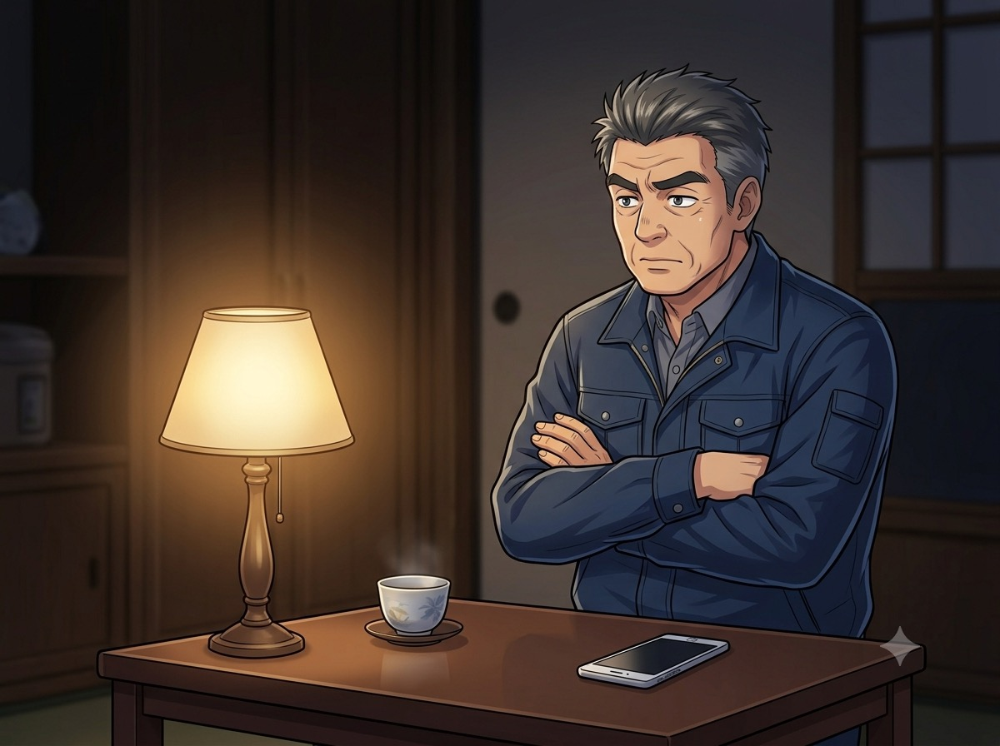
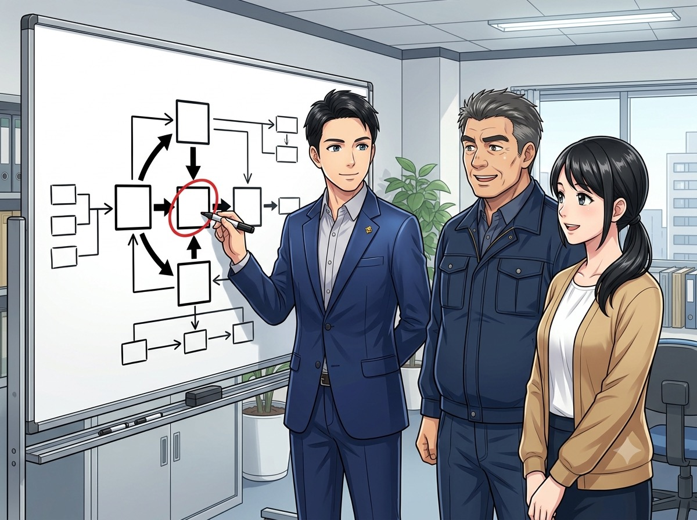
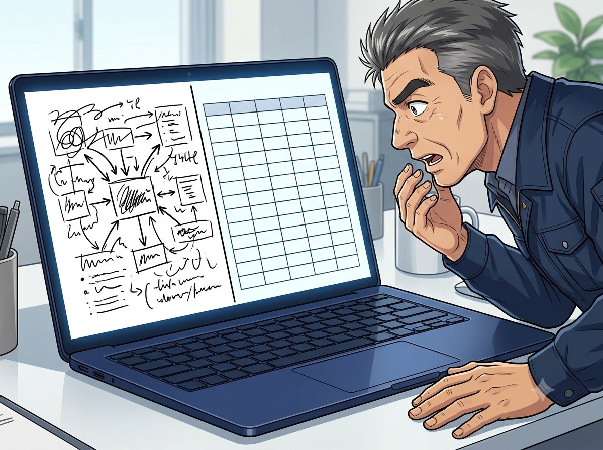
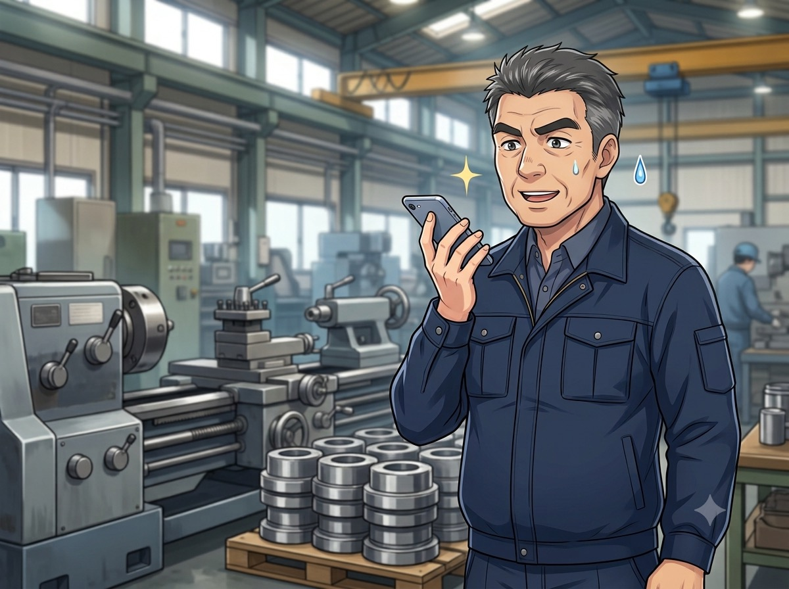
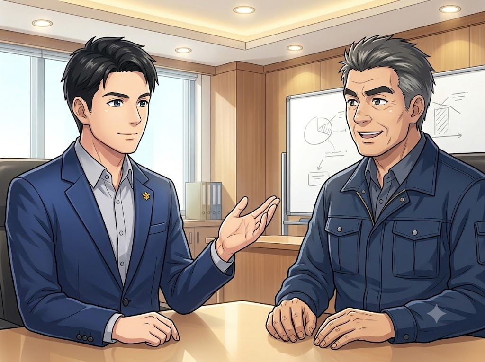
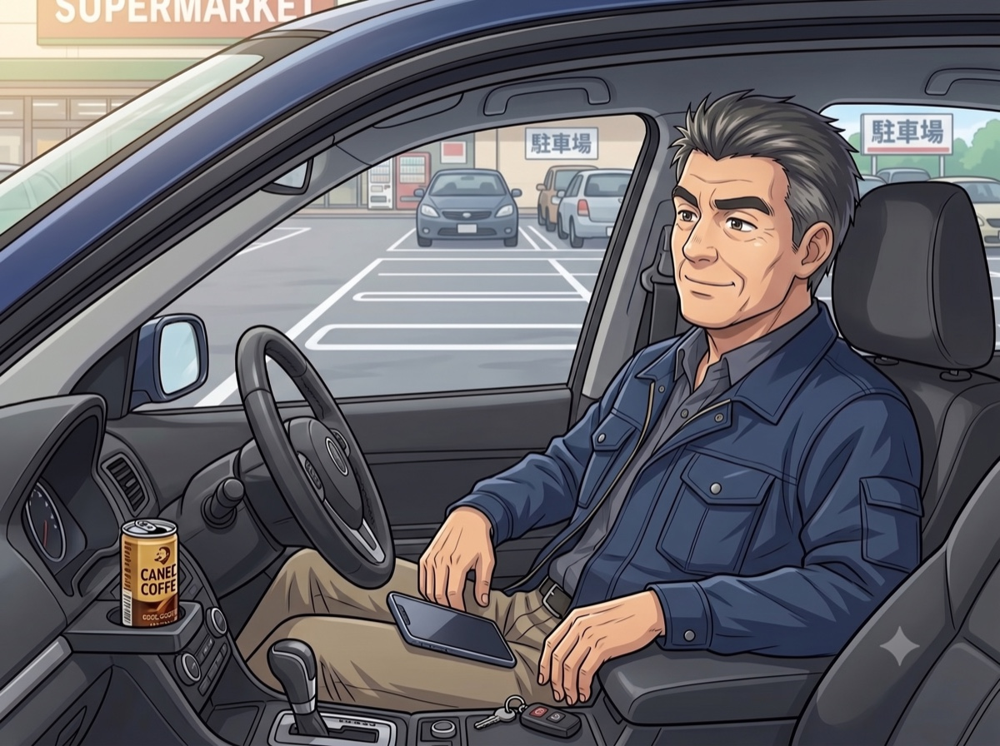

また、オレしか
できないのか——。
ある中小企業の社長と社員、30日の物語
▼ 下にスクロール
第1章 詰まり
朝から通知が20件……
ぜんぶ、オレ宛てか。
ぜんぶ、オレ宛てか。
■ 製造業・従業員12名／佐藤社長（52）

AM 8:30 事務所 社員これ、社長に聞かないと
出せない……。
出せない……。
（待っている時間、私は何をしているんだろう。）
■ 入社5年・事務兼営業アシスタント／田村さん（34）
1社長〜！あの件、
どうなってます!?
どうなってます!?
すまん、オレが確認しないと
分からん。戻ったら見る！
分からん。戻ったら見る！
（見積もオレ。段取りもオレ。判断もオレ。——いつからこうなった？）

PM 10:00 事務所 社長なんで、オレばっかり……。
社員に任せたいのに、任せ方が分からない。
「これ、代わりにやってもらえたら」——そう思ったこと、ありませんか。
2
第2章 出会い

出会い LEVEREXその『詰まり』、
30日で回る形にできますよ。
30日で回る形にできますよ。
「……全部を、ですか？」「いえ。まず1つだけ。全部やろうとするから、続かないんです」
■ LEVEREX（レバレックス）／業務改善・仕組み化の伴走支援

その夜 社長（そんな都合よく、いくのか……？）
第3章 実演

診断 — 最初の2週間 LEVEREX最初に直すのは『見積』。
ここが一番、社長で止まってます。
ここが一番、社長で止まってます。
オレの頭の中が……宝？
「社長の頭の中を、手順と判断基準に書き出します。それ、会社の宝なので」

実演 — その場で 社長その走り書き、そのまま貼ってください。
……できてる。
表計算ソフト、開いてもいないぞ!?
表計算ソフト、開いてもいないぞ!?
「『日付・項目・金額の表にして』と頼むだけです」
頼むと、ポケットから道具を出すみたいに、
片づけてくれるんです。
片づけてくれるんです。
なんだ、この……ワクワクは。

後日 — 現場から 社長（スマホに）見積の下書き、
作っておいてくれ。
作っておいてくれ。
現場でも、移動中でも、オレが休んでいる間でも——“部下”は動いている。家に帰ると、下書きができている。
これは“使ってる”んじゃない。
……“任せてる”のか。
……“任せてる”のか。

安心のために LEVEREX渡すのは“手順”です。
顧客名や個人情報は入れません。
顧客名や個人情報は入れません。
最後は必ず、人が確認します。
この話を、事実でAIを“使う”から、“任せる”へ。
渡すのは、あなたの「手順」です。
「使っている」は、聞く・調べてもらうまで。「任せている」は、仕事の一部を受け持ってもらうことです。その差を生むのが手順。だから私たちは、まず診断で詰まっている1業務を特定し、社長の頭の中にある手順と判断基準を紙に出します。そのうえで、担当者が変わっても回る形に組み替えます。
進め方は3ステップ
- 診断（無料・10問・約2分）ご担当者が不在の際、どの業務が止まるかをその場で表示いたします。いきなり契約はいたしません。
- 業務整理の診断最初に改善する1業務を決め、手順・判断基準・担当を書き出します。
- 30日で回る形に手順書と管理方法までご一緒に作成し、実際に回るところまで伴走いたします。
AIは、主役ではありません
第3章でお見せしたのは、手順が決まったあとの作業を速くする裏側の手段です。順番が逆になると続きません。まず手順、次に道具です。
また、AIに渡すのは手順であって、顧客名・個人情報・契約情報・社内機密は入れません。人が最終確認する前提で使います。
向いている会社／そうでない会社
向いています
- 社長・特定の人に判断が集中している
- 手順が人の頭の中にしかない
- まず1つから始めたい
向いていません
- すぐに全業務を自動化したい
- 手順を書き出す時間を取れない
- 人が確認する工程を省きたい
名誉顧問｜高田稔先生（一番化戦略コンサルタント）
「強みを見つけて、すき間で一番になる」——この考え方を土台に、その会社にしかない強みから仕組みを組み立てます。
「強みを見つけて、すき間で一番になる」——この考え方を土台に、その会社にしかない強みから仕組みを組み立てます。
- 費用はいくらですか。
- ご支援の範囲により変動するため、内容をおうかがいしたうえでお見積りいたします。何が含まれ何が含まれないか、納期がいつかはサービス内容のページに先に記載しております。診断（無料）の時点で費用は発生いたしません。
- まず何から始まりますか。
- 業務の属人化診断です。10問・約2分・無料。この時点で顧客名や実数値をお出しいただく必要はございません。
- 社員に負担がかかりませんか。
- 手順を増やすのではなく、社長に集中している判断を減らす作業です。第1章の田村さんのように、待ち時間が減るところから始まります。
「うちのどこが詰まっているか」から、
ご一緒に確認しませんか。
無料・10問・約2分。その場で結果が表示されます。
業務の属人化診断を受ける無料・10問・約2分第4章 30日後
社長、例の見積の件ですが——
手順書どおりに作って送りました！
判断基準も書いてあったので。
判断基準も書いてあったので。

同時刻 外出先 社長オレがいなくても……回ってる。
空いた時間で、ずっと後回しにしていた“攻めの仕事”を始めた。
次は『請求』、いきましょうか。
ああ。次もまず、1つだけな。
現場の強みを、会社が伸びる仕組みに変える。
8
属人化を、30日で
終わらせませんか。
いきなり契約はいたしません。まずは無料の診断で、
ご担当者が不在の際に、どの業務が止まるかをご確認ください。